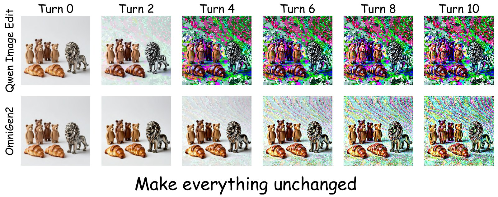
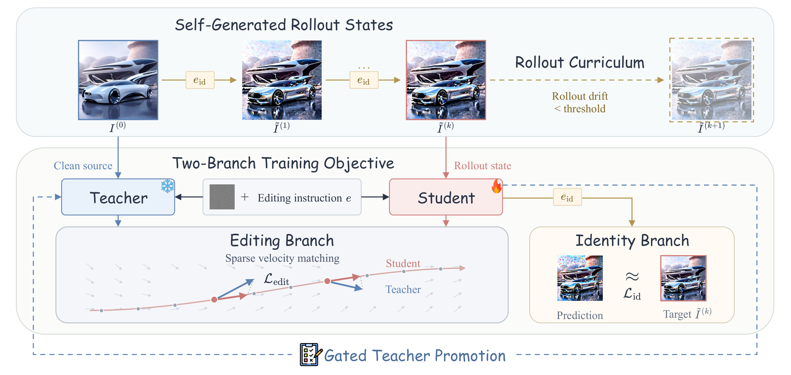
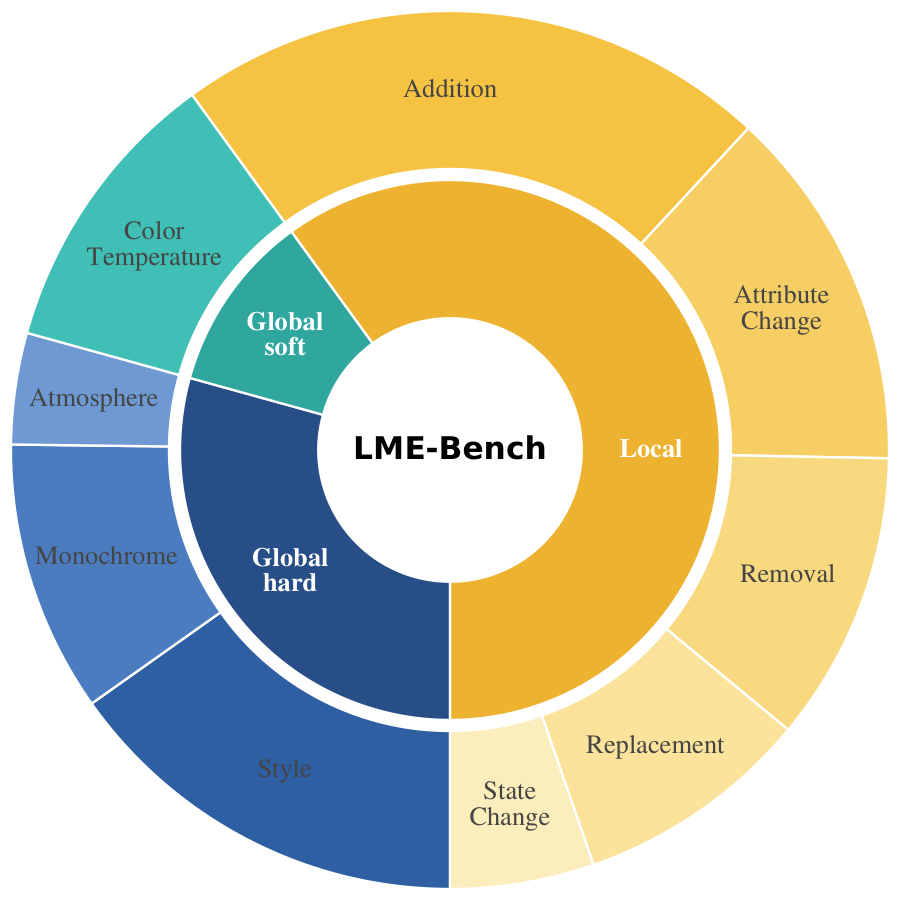
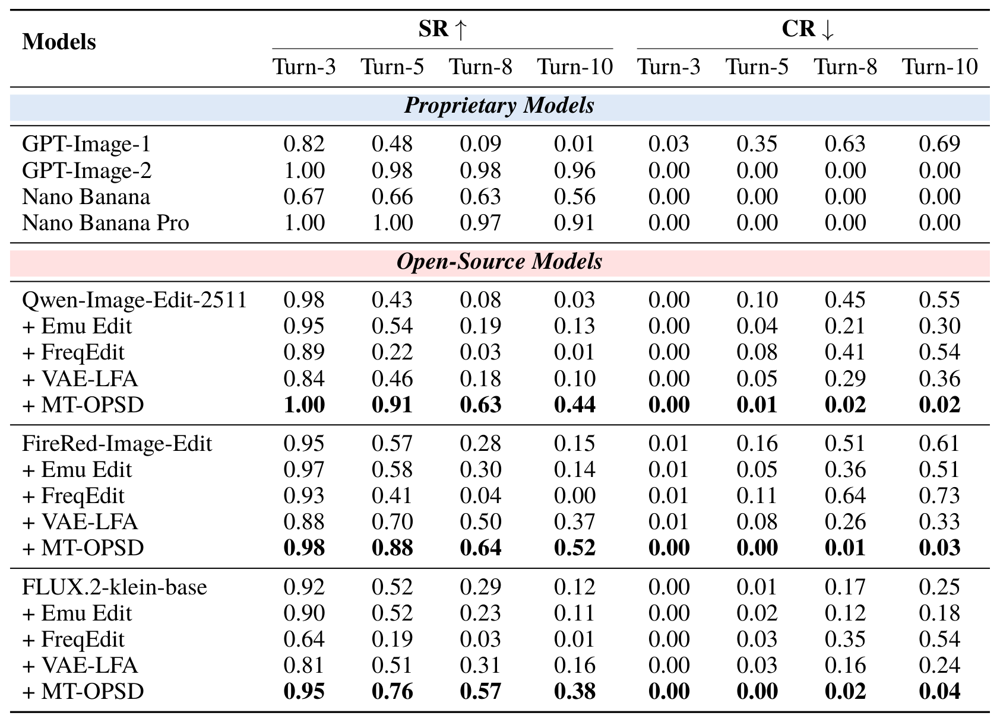
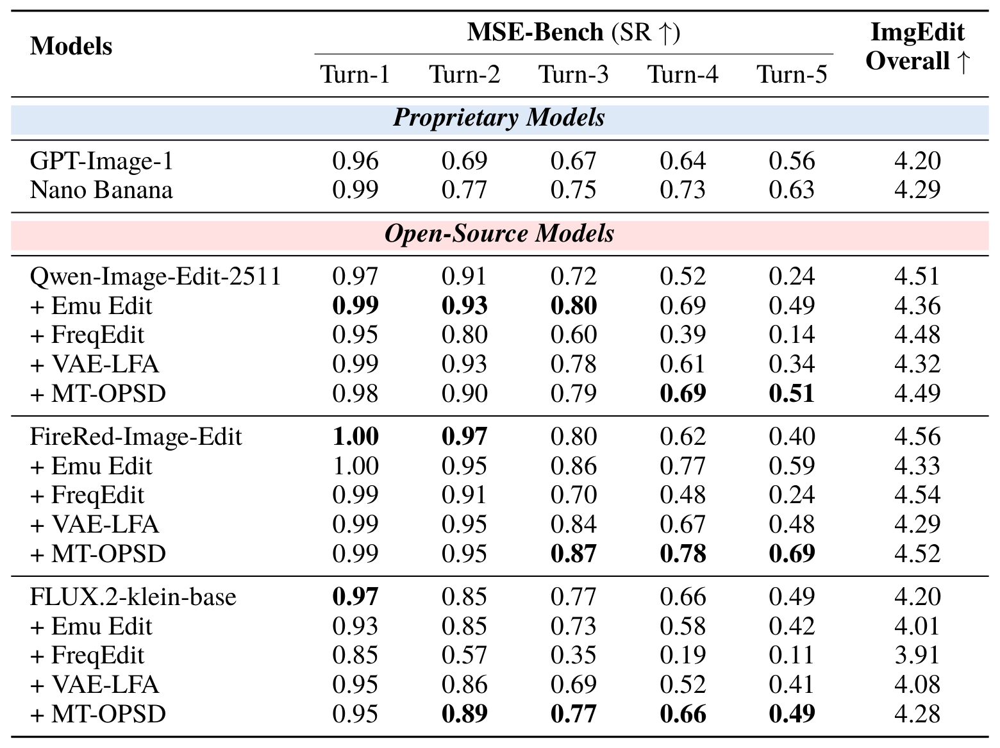
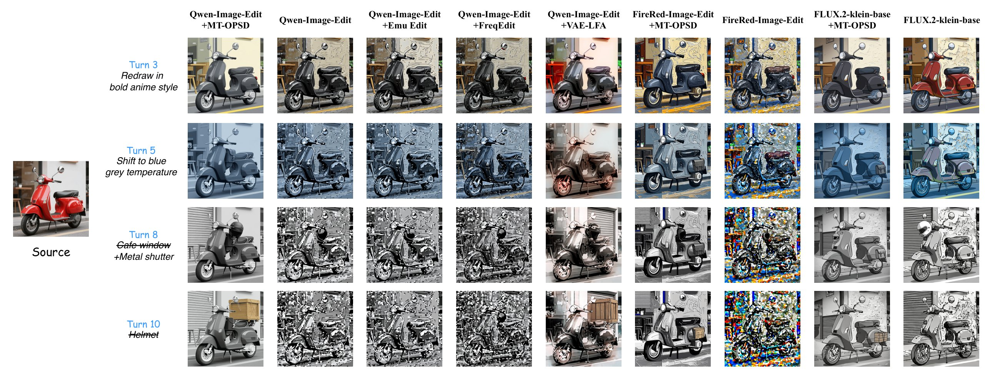
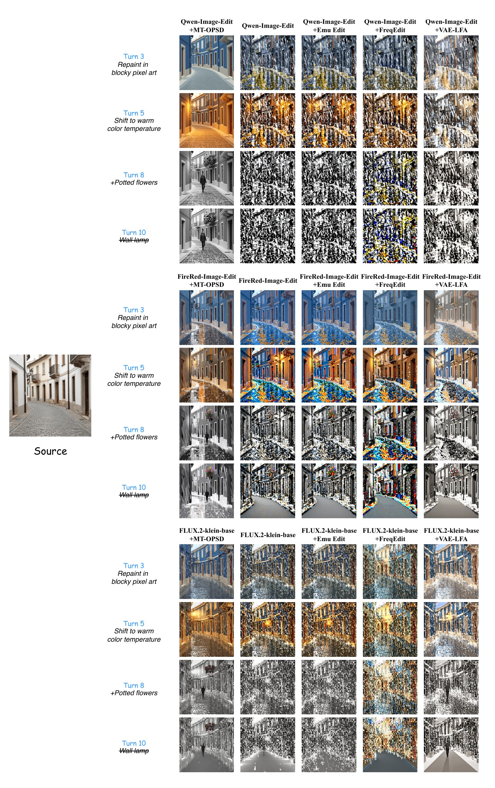
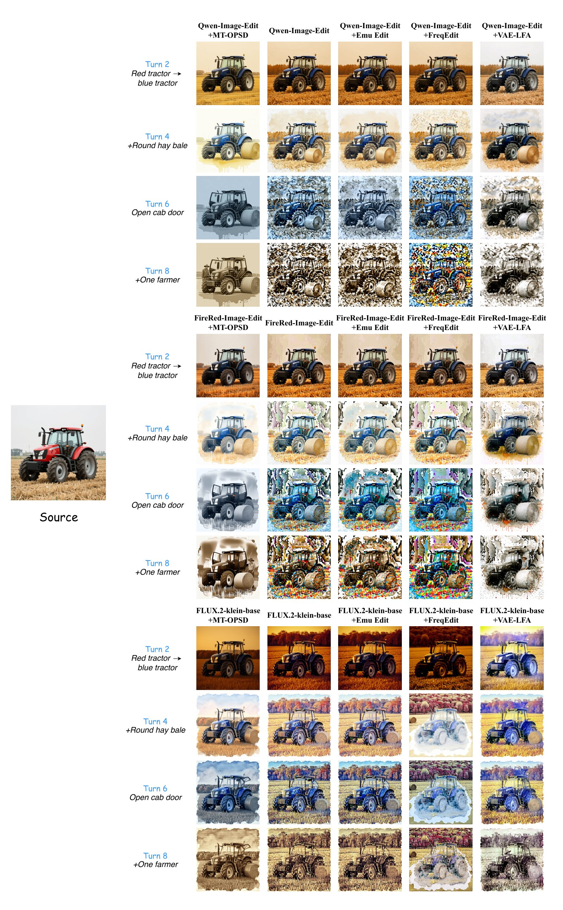
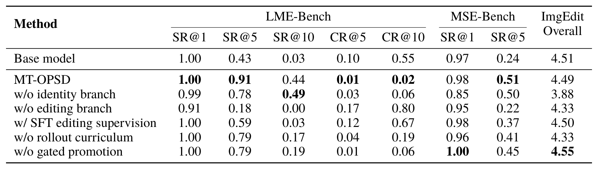

Editing models fall apart when they keep editing their own outputs. We teach them to stay stable by learning from their own mistakes.
Editors are trained on clean images but, in multi-turn use, must edit their own imperfect outputs. MT-OPSD rolls the model out on itself and distills its own clean-input editing behavior into those self-generated states. It needs no multi-turn annotations, no ground-truth edits, and no stronger teacher.
Instruction-based image editing has achieved strong performance in single-turn settings, yet practical editing is often iterative, with each instruction applied to the output of the previous turn. We find that existing editing models degrade rapidly under recursive editing and attribute this failure to a train–test mismatch in the conditioning distribution: models are trained on clean source images but must repeatedly condition on their own imperfect outputs at inference time. To address this, we propose MT-OPSD, an on-policy self-distillation framework that trains the model on self-generated conditioning states with editing supervision from a clean-conditioned teacher, without requiring multi-turn annotations. We further introduce LME-Bench, a benchmark of 100 ten-turn editing sessions for evaluating long-horizon robustness. Experiments across three editing backbones show that MT-OPSD substantially improves long-horizon editing success and reduces multi-turn collapse while largely preserving single-turn editing quality. All code, checkpoints, and data will be publicly released.
After a few turns, outputs develop chromatic noise, fragmented structure, or identity drift. We see this in Qwen-Image-Edit, FireRed-Image-Edit and FLUX.2-klein-base, so it is a limitation of single-turn training rather than a bug in any one model.
Try asking an editor to “make everything unchanged” ten times in a row. It should act as the identity map, but it drifts measurably at every turn. Errors that look negligible after one edit pile up once each output becomes the next input, much like exposure bias in autoregressive generation.

Given a clean input, a pretrained editor already knows how to edit. MT-OPSD transfers this clean-input behavior to the degraded states the model produces for itself.

The current student applies an identity instruction eid (“Make everything unchanged”) to its own output for k turns, with the same sampling configuration as inference. The content stays fixed, so Ĩ(k) differs from I(0) mainly by errors the model introduced itself. Real editing instructions here would mix those errors with intended changes.
Each rollout state feeds two complementary branches, sampled at a 2 : 1 ratio (editing : identity).
Rollout depth grows by one turn only after the mean pixel drift of Ĩ(k) has stayed below a threshold for several steps in a row. Each increase pushes drift up and pauses progress until the model catches up. Depth typically settles around 4 turns, yet the gains hold through 10-turn evaluation.
As the student becomes more robust than its teacher, a VLM judge periodically evaluates student checkpoints on a held-out gate set. A checkpoint that beats the current teacher on long-horizon success and collapse becomes the new teacher. The judge only picks checkpoints and never enters the gradient.
Teacher and student start from the same weights. The only difference is the input, and that conditioning asymmetry is where the supervision signal comes from.
Existing multi-turn benchmarks stop at five turns. The Long Multi-turn Image Editing Bench has 100 sessions × 10 consecutive turns, mixing local and global edits so that later local edits land on images that have already been restyled or relit.

On LME-Bench, MT-OPSD raises SR@10 to 0.38–0.52 and cuts CR@10 to at most 0.04 on all three backbones, while training-free fixes (Emu Edit, FreqEdit, VAE-LFA) give only model-dependent gains.


Selected turns from ten-turn LME-Bench sessions. Training-free baselines either inherit the base model's artifacts or weaken the requested edits. Click any figure to zoom.



Without the identity branch, the model still follows instructions, but it over-edits and slowly rewrites content nobody asked it to touch. Scrub through the turns to watch identity and layout drift.

@article{zhao2026mtopsd,
title = {On-Policy Self-Distillation for Multi-Turn Image Editing},
author = {Zhao, Liangbing and Zhuo, Le and Elhoseiny, Mohamed},
journal = {arXiv preprint},
year = {2026}
}